Componentes internos: são as peças que se conectam entre si para que o computador funcione. Dispositivos de armazenamento secundário: são os componentes responsáveis por armazenar os dados de forma permanente no computador.
Basicamente, um processador é uma poderosa máquina de calcular. O componente recebe um determinado volume de dados, orientados em padrão binário 0 e 1 e tem a função de responder a esse volume, processando a informação com base em instruções armazenadas em sua memória interna.
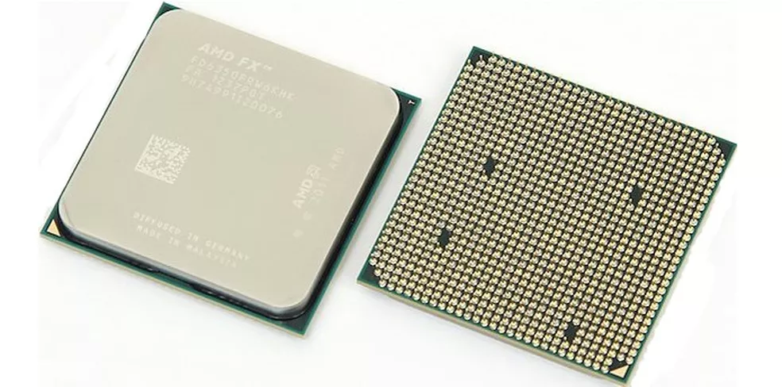significa guardar ou estocar qualquer coisa para posterior uso. Armazenamento também é a tradução de storage, termo em inglês que descreve espaços como self-storages, embalagens para guardar objetos ou sistemas para armazenar dados de computadores, celulares e outros dispositivos.
é um termo que se refere a uma capacidade mental, cuja função é codificar, armazenar e recuperar informações.
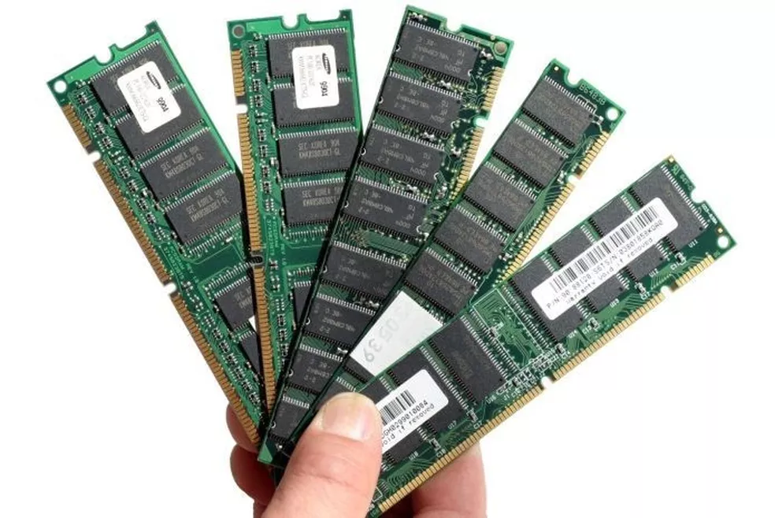possuem função principal de transformar a corrente elétrica da rede, que chega em uma voltagem alta, para uma voltagem menor, que é a indicada para o hardware do computador.
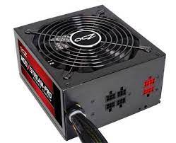monitor, teclado, Mouse, caixas de som, impressora...
>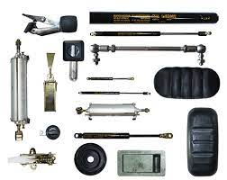O teclado é para digitar,
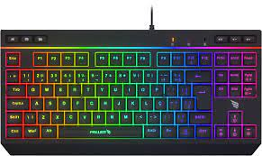transmitir o que está sendo realizado no computador, seja através do movimento dos olhos ou do seu corpo, para que assim você possa perceber todos os dados que estão sendo requisitados.
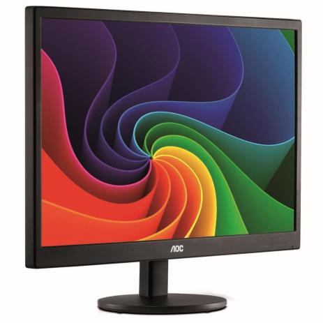faz parte dos periféricos do seu computador e é a parte que no permite interagir com os objetos que aparecem na tela através de um cursor que podemos ver no monitor.
ressora? Elas são responsáveis por dar forma a textos e imagens, tanto domésticos quanto profissionais.
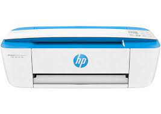Papel branco tratado superficialmente para ancorar a tinta inkjet de impressoras de grandes formatos para dar qualidade fotografica a impressão.
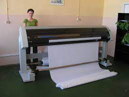digitalizar imagens, fotos e textos impressos para o computador
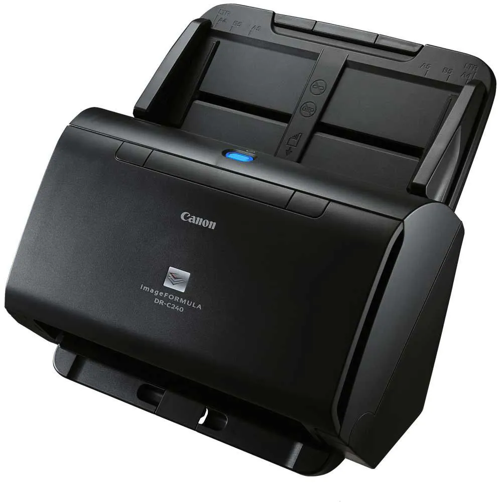proteger os componentes de sujeira e umidade, e também evitar superaquecimento dos componentes
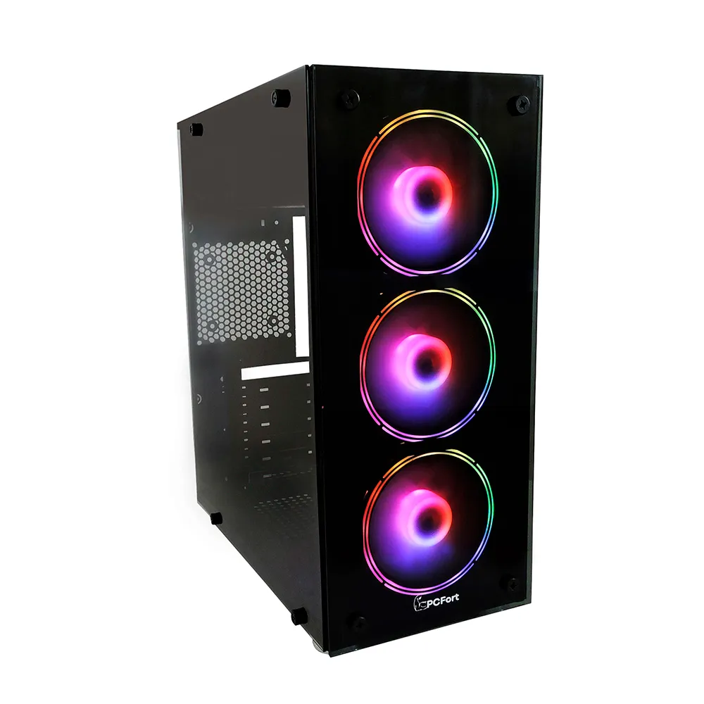É um dispositivo de hardware de entrada de sinal (input), cuja função é a captação de imagem e vídeo
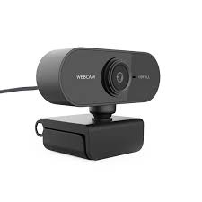conseguem reproduzir sons de diversas frequências.
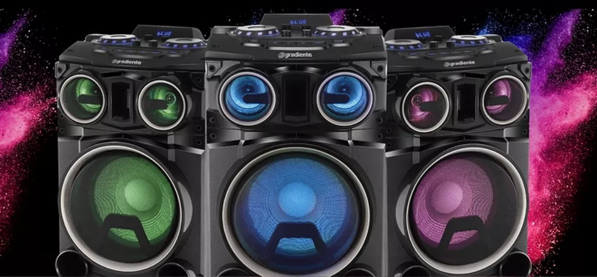são equipamentos que transformam energia sonora em energia elétrica,
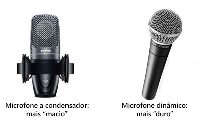são fones de ouvido que contam com um arco envolvendo a cabeça, os fones de ouvido e um microfone.
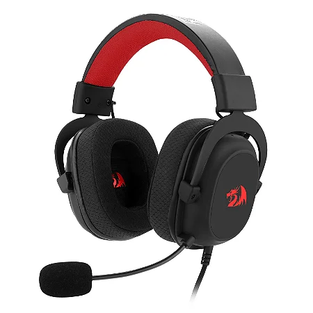são responsáveis pela conexão entre as várias partes de um sistema computacional baseado na arquitetura de Von-Neumann.
a comunicação de dados é realizada por meio de ondas eletromagnéticas, como frequências de rádio, infravermelho e satélite, ao invés de cabos e fios.